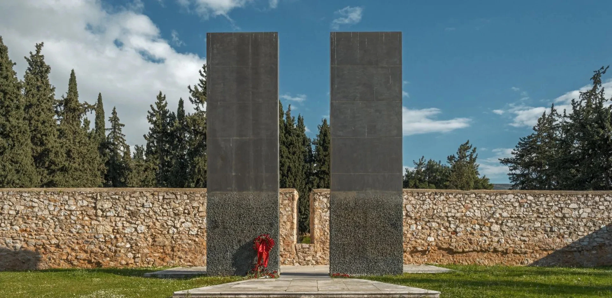
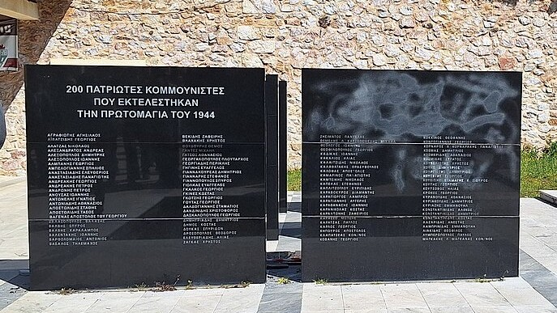
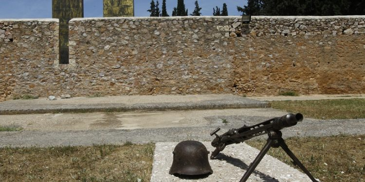

Το Σκοπευτήριο της Καισαριανής αναγνωρίζεται ως τον κορυφαίο τόπο ιστορικής μνήμης και θυσίας της Εθνικής Αντίστασης, όπου κατά τη διάρκεια
της Γερμανικής Κατοχής (1941-1944) εκτελέστηκαν εκατοντάδες Έλληνες πατριώτες...
Η πιο αιματηρή εκτέλεση ήταν αυτή που έλαβε χώρα
την 1η Μαΐου 1944, αντίποινο για τη δράση της αντιστασιακής οργάνωσης ΕΛΑΣ, και είχε ως θύματά της «200» πολιτικούς κρατούμενους.
Στις αρχές της δεκαετίας του 80' ξεκίνησαν ενέργειες για την αποκατάσταση
και την διαμόρφωση του χώρου σε «πάρκο μνήμης» και αναψυχής.
Ο επισκέπτης σήμερα μπορεί να εντοπίσει δύο μεγάλες κάθετες στήλες, μπροστά από τον μαντρότοιχο του σκοπευτηρίου, στο σημείο δηλαδή
όπου οι αντιστασιακοί στήνονταν προς εκτέλεση.

Το ξημέρωμα συγκέντρωσαν τους 200 πατριώτες στις φυλακές Χαιδαρίου και πριν επιβιβαστούν στα αυτοκίνητα, άρχισαν να τραγουδούν
τον Εθνικό ύμνο
και τον σκοπό του δημοτικού τραγουδιού Σουλιώτισσες του Χορού του Ζαλόγγου μπροστά στα μάτια των έκπληκτων Ναζί.
Οι «200 πατριώτες» του Χαϊδαρίου μεταφέρθηκαν στο σκοπευτήριο της Καισαριανής και ανά 20 άτομα εκτελέστηκαν με οπλοπολυβόλα. Οι σοροί μεταφέρθηκαν
στο Τρίτο Νεκροταφείο Αθηνών, όπου τάφηκαν σε ατομικούς τάφους. Στο σημείο υπάρχουν επίσης δώδεκα οριζόντιες στήλες από μαύρο γρανίτη, στις οποίες έχουν χαραχθεί τα ονόματα των θυμάτων.

Στις 21/9/1944 στην επέτειο για τα τρίχρονα από την ίδρυση του ΕΑΜ, ο 6ος τομέας του ΕΑΜ τίμησε τους νεκρούς με εκδηλώσεις.
Μετά τα Δεκεμβριανά όλα ξεχάστηκαν και το Θυσιαστήριο ξανάγινε πεδίο βολής.
Μετά την απελευθέρωση, ο χώρος ονομάστηκε από τους αντιστασιακούς ως «Θυσιαστήριο της Λευτεριάς».
Ο χώρος όμως, δεν έτυχε του ανάλογου σεβασμού για την ιερότητα του
και πολύ αργότερα το 1984 ξεκίνησαν ενέργειες για τη διαμόρφωσή του σε πάρκο μνήμης. Σήμερα, ο χώρος λειτουργεί ως
«μουσείο των 200» και χώρος αναψυχής, διατηρώντας τον μαντρότοιχο όπου έπεφταν οι εκτελεσθέντες, τιμώντας τη μνήμη των θυμάτων
